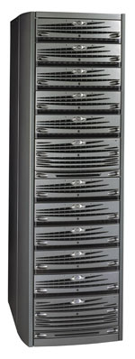

Олег Спиряев
Сталкиваясь с жесткой конкуренцией, компании стремятся найти самый короткий и верный путь в борьбе за свою долю рынка. Решающими факторами в этом состязании могут стать правильный выбор информационной технологии для поддержки стратегии развития компании и эффективное управление ею. Особенно важно не ошибиться в выборе средств хранения информации. Сбой в их работе может привести к потере важных данных, непроизводительным затратам ресурсов, нарушению ритма производства. Таким образом, от правильного выбора средств хранения информации существенным образом зависит благополучие предприятия.
Корпоративные хранилища данных CLARiiON, выпускаемые компанией ЕМС (http://www.emc.com), обладают такими качествами, как надежность хранения данных, высокая производительность, простота управления и обслуживания. Богатый арсенал коммуникационных средств дает возможность размещать устройства CLARiiON в любом узле корпоративной сети как самостоятельные системы или в качестве элемента сети хранения данных - чтобы увеличить надежность доступа к данным и гибкость. Благодаря архитектуре, позволяющей дополнительно включать в систему компоненты без отключения питания, появляется и возможность реконфигурирования в реальном масштабе времени, что дает серьезные преимущества в современном динамичном бизнесе.
Системы CLARiiON обеспечивают гарантированную надежность и целостность данных важнейших для деятельности компании приложений. Для этого в них реализованы такие возможности, как включение накопителей в состав групп RAID, замена основных компонентов без остановки работы массива, специальная система контроля целостности хранимых данных, дублированные системы охлаждения и питания.
EMC: штрихи к портретуКорпорация EMC - ведущий мировой поставщик корпоративных систем хранения и управления данными. EMC предлагает разномасштабные и не зависящие от используемых платформ комплексные решения, включающие интеллектуальные дисковые массивы, ПО, предоставляющее широкий набор функциональных возможностей оборудования, а также мощные инструменты для управления этим оборудованием, и профессиональные услуги. Основанная в 1979 г. как поставщик плат оперативной памяти, EMC вышла на рынок систем хранения информации в 1989 г., а с выпуском линейки Symmetrix стала первой компанией, производящей интеллектуальные системы хранения данных, основанные на массивах дисковых накопителей. Сегодня технология RAID (Redundant Array of Independent Disks) стала стандартом при построении дисковых систем. В 1994 г. EMC расширила функциональные возможности Symmetrix, создав первую в мире независимую от типа подключаемых платформ систему хранения информации, способную одновременно работать со всеми распространенными в мире компьютерными системами. До настоящего времени одним из основных преимуществ EMC остается независимость разработок от конкретной платформы - интеллектуальные дисковые массивы и ПО EMC реализованы на всех основных серверных платформах. Внедрение технологий EMC не требует затрат времени и материальных средств на их интеграцию в уже развернутую инфраструктуру хранения данных. Возможность интеграции дифференцированных решений EMC с системами хранения данных других производителей значительно повышает надежность хранения информации и снижает стоимость эксплуатации системы. Компания EMC входит в список Fortune 500 и была названа BusinessWeek в числе 50 наиболее успешно работающих компаний. Главные заказчики EMC - это крупные банки и финансовые корпорации, государственные предприятия, специализирующиеся на анализе и обработке информации, Интернет-провайдеры, телекоммуникационные компании, авиакомпании и другие транспортные предприятия, образовательные и медицинские учреждения - все те организации, успех работы которых напрямую зависит от информации, точнее, от надежности ее хранения и эффективности управления ею. |
Эволюция поколений
До недавнего времени унаследованное от Data General семейство накопителей CLARiiON было представлено двумя модельными рядами: FC4xxx и FC5xxx. Устройства были основаны на технологии Fibre Channel и выполнены на одной и той же конструктивной базе - в виде стойки, где может быть смонтировано до 100 индивидуальных дисков. Исключение составляла простейшая модель FC5300, рассчитанная на установку до 30 дисков. В стойку монтировался один блок типа Disk Processor Enclosure (DPE), в котором находилась система управления всем устройством и первые десять посадочных мест под диски. Расширение дискового пространства достигалось за счет установки до девяти блоков, называемых Disk Array Enclosure (DAE), каждый из которых содержал 10 двухпортовых дисков, объединяемых резервированной парой петель Fibre Channel.
Наличие двух совместимых типов блоков DAE и DPE обеспечивало модульность конструкции и позволяло создавать новую модель путем расширения функциональности DPE, оставляя при этом неизменными блоки DAE. Такой подход открывал возможность для гибкой модернизации эксплуатируемых устройств: основной дисковый массив остается неизменным, поставляются только новые средства управления.
Общим для всех версий DPE было то, что в любом случае в состав конфигурации входили два резервирующих друг друга процессора SP (Storage Processor) для управления памятью и интерфейс с дисками двойная петля FC-AL, но скорость передачи могла варьироваться от 100 до 400 Мбайт/с в зависимости от модели. Основные различия обнаруживались в интерфейсе с хостами. Например, в FC5х00 подключение было возможно с максимальной скоростью 200 Мбайт/с, а в FC4700 - по FC-AL, и общая скорость может быть доведена до 400 Мбайт/с. Кроме того, допустимо было непосредственное подключение к "фабрике коммутации" Fibre Channel Switched Fabric (FC-SW); имелись также конверторы для Gigabit Ethernet.
Все модели CLARiiON обладают полным набором дублирующих компонентов, включая системы охлаждения и питания, а также используют зеркалирование сверхоперативной (кэш) и основной памяти. При полной потере электропитания содержимое памяти записывается на дисковые накопители, что обеспечивает целостность данных даже при длительных отключениях.
Кроме того, все системы хранения EMC CLARiiON отличаются широкими возможностями модернизации. Так, систему FC4500 можно превратить в FC4700, сохранив большую часть первоначальных инвестиций. А CLARiiON IP4700 можно трансформировать в FC4700 и обратно. Все это позволяет плавно наращивать не только емкость, но и производительность, функциональность и сетевые возможности систем хранения.
Чтобы обеспечить высокую надежность и целостность данных, в системах хранения CLARiiON применяется совокупность таких методов, как использование дополнительных контрольных сумм, хранимых вместе с данными на дисковых накопителях, перемещение содержимого кэш-памяти на дисковые накопители в случае аварии питания, а также возможность обновлять все программные средства без прерывания работы системы.
CLARiiON FC5300
Система CLARiiON FC5300 позволяет хранить до 2 Тбайт данных. Поставки этих систем осуществлялись такими OEM-партнерами EMC, как Bull, Dell, Fujitsu Siemens и другими. Поддержка ПО Access Logix и Navisphere позволяла применять FC5300 для консолидации данных нескольких серверов одновременно. Система выпускалась в трех вариантах: напольный модуль с расширением до 10 дисков (FC5301), напольный модуль с расширением до 30 дисков (FC5300), а также вариант для монтирования в 19-дюйм стойку (FC5310), расширяемый от 0 до 30 дисков с использованием 10 дисковых полок DAE. Количество операций ввода-вывода в секунду могло достигать 8400. Пропускная способность при потоковых операциях - 121 Мбайт/с.
CLARiiON FC4500
Эта система работает в варианте одиночного подключения к серверу, а со специальным ПО Access Logix - сразу с несколькими серверами. CLARiiON FC4500 оборудовалась 100 FC-AL дисками емкостью от 18 до 73 Гбайт, каждый Storage-процессор имел по одному 100-Мбит FC-интерфейсу. FC4500 была одной из относительно недорогих систем сетевого хранения данных, обладала полностью дублированными компонентами (процессоры, диски, FC, блоки питания, кэш-память) и была готова к использованию в гетерогенных и кластерных средах. В ней поддерживались практически любые варианты RAID-массивов, любые операции смены оборудования и расширения дискового пространства происходили в горячем режиме без остановки системы. Программное обеспечение Navisphere с удобным графическим интерфейсом обеспечивало конфигурирование и мониторинг массива, а также возможность сообщения статуса массива администратору различными средствами: электронная почта, пейджер, SNMP.
Имея общую емкость дисковой памяти 7,3 Тбайт, пропускную способность 185 Мбайт/с и более 32 тыс. одновременно кэшируемых операций ввода-вывода, CLARiiON FC4500 была одной из самых производительных систем хранения в своем классе. Наилучшая область применения для этого аппаратного решения - консолидированное хранилище данных для корпоративной информационной системы.
CLARiiON FC4700
Наиболее яркий представитель пятого поколения устройств из семейства CLARiiON, модель FC4700, относится к системам хранения большего масштаба. Внешне и функционально похожая на FC4500, эта система обладает более новыми Storage-процессорами, четырьмя коннекторами Fibre Channel и гораздо более широкими возможностями ПО NaviSphere, в которое были включены дополнительные модули SnapView для создания "мгновенных" копий данных (при резервном копировании) и MirrorView - для создания зеркальных копий данных (в случае организации кампусных кластеров и катастрофоустойчивых систем). Модуль Access Logix позволял подключить FC4700 к нескольким различным серверам одновременно.
Вообще говоря, системы хранения FC4500 и FC4700 могли использоваться для масштабной консолидации данных десятков серверов. Оба массива поддерживали одновременную работу с ОС Sun Solaris, HP-UX, IBM AIX, SGI IRIX, Linux, Microsoft Windows NT/2000 и Novell NetWare. На одной системе CLARiiON FC4500 могли хранить свои данные 15 серверов, на FC4700 - уже 64 сервера.
Пользователи таких хранилищ данных располагали дисковым пространством емкостью до 8,7 Тбайт при производительности системы до 51 тыс. кэшируемых операций ввода-вывода и пропускной способности до 360 Мбайт/с. Это масштабируемое, высокопроизводительное и гибкое решение как нельзя лучше подходило для крупных корпоративных информационных систем. В частности, дисковый массив FC4700 с успехом используется в таких областях, как OLTP, Web-сервис, обработка графики и видео.
Система CLARiiON FC4700-2, имеющая четыре одновременно работающих канала с пропускной способностью 200 Мбайт/с каждый (в FC4700 - 100 Мбайт/с), полностью дублированные компоненты и 2 Гбайт кэш-памяти, стала одной из самых производительных в своем классе. Наилучшая область применения для этого аппаратного решения - консолидированное хранилище данных для корпоративной информационной системы и SAN.
CLARiiON IP4700
Отличительная особенность CLARiiON IP4700 - расширенные коммуникационные возможности, необходимые для распределенных систем обработки информации. Обладая 7,3 Тбайт дисковой памяти, CLARiiON IP4700 поддерживает такие функции, как прямой доступ к данным непосредственно из локальной вычислительной IP-сети для практически неограниченного количества клиентов и серверов.
CLARiiON IP4700 - это мощный отказоустойчивый корпоративный файловый сервер с производительностью более 10 тыс. операций в секунду по сети IP. Полностью обеспечивается возможность одновременного доступа к данным с рабочих станций под управлением Windows и Unix. Поддержка СУБД Microsoft SQL Server 2000 и Oracle8i позволяет консолидировать хранение баз данных. Как и другие решения семейства CLARiiON, IP4700 легко вписывается в архитектуру распределенной системы, обладает достаточной гибкостью при конфигурировании, проста в управлении и легко масштабируется. Программное средство SnapView/IP позволяет фиксировать текущее состояние файлов в требуемый момент времени путем создания дополнительной копии данных.
Dell и EMC: успехи сотрудничестваЛетом прошлого года компании Dell Computer (http://www.dell.com) и EMC объявили о продлении подписанного в октябре 2001 г. соглашения о сотрудничестве в области производства и продвижения сетевых систем хранения данных на срок до декабря 2008 г. Представители компаний также сообщили, что союз успешно развивался на протяжении всего времени, отметив достижение соглашения о производстве на заводах Dell системы Dell/EMC CX200, предназначенной для организации решений начального уровня на предприятиях малого и среднего бизнеса, в частности, при внедрении ERP-систем таких поставщиков, как SAP, Oracle и т. д. Кризис ИТ-рынка в 2000-2001 гг. привел одновременно к сокращению ИТ-бюджетов большинства компаний-заказчиков и к необходимости выработки новых подходов к ведению бизнеса и привлечению клиентов для поставщиков. Для EMC и Dell это послужило толчком к поиску новых решений для успешного функционирования на сокращающемся рынке. Dell видит свою задачу в расширении предложения в области построения центров данных различного масштаба. Для EMC преимущество альянса обусловлено наличием мощного канала вывода на рынок своей продукции через компанию, меньше других пострадавшую от кризиса. В результате более тесного и активного сотрудничества обе компании рассчитывают на существенное укрепление позиций в секторе решений для средних и крупных клиентов и кумулятивный эффект в увеличении своих долей на рынке высокопроизводительных серверов и систем хранения данных. Подчеркнем, что соглашение было продлено за два с лишним года до конца срока его действия, когда обе компании воочию убедились в его полезности для себя (за два с небольшим года более 4 тыс. клиентов по всему миру купили системы хранения Dell/EMC). |
Новое поколение
Новую линейку CLARiiON CX образуют три системы хранения, у каждой из которых есть широкие возможности расширения в пределах данной модели. Кроме того, младшие модели легко трансформируются в старшие путем замены и/или добавления отдельных конструктивных элементов при максимальном сохранении существующих компонентов. Таким образом, приобретая младшую модель линейки CX200, заказчик по мере развития бизнеса и увеличения объемов обрабатываемых данных может, сохранив практически все компоненты системы, плавно "вырастить" ее в верхнюю модель линейки CX600, в восемь раз опережающую начальную по емкости и объему кэш-памяти и в шесть раз - по производительности и пропускной способности.
| Новое поколение CLARiiON.
|
"Выращивание" системы подразумевает не только увеличение объемов дискового пространства и процессорной мощности. Это и увеличение максимального числа подключаемых серверов, и расширение списка совместимости с операционными системами (младшая модель не позволяет подключать Unix-системы), и широта технологических возможностей интегрирования в информационную систему (DAS, SAN, NAS), и рост функциональности, обеспечиваемый программными специализированными приложениями. Немаловажно, что все программные приложения, работающие на CLARiiON (как функциональные, так и для управления и мониторинга), одинаковы не только в пределах линейки CX, но и для всех моделей предшествующих поколений.
Эксперты полагают, что принципы модульности, последовательности развития и наследственности, используемые EMC при создании систем хранения, получат дальнейшее развитие в ближайшем будущем, что, по всей вероятности, позволит трансформировать различные модели систем хранения EMC не только в пределах одной линейки, но и по всему продуктовому ряду независимо от типа платформы.
CLARiiON CX200
CX200 - это модель начального уровня сетевых систем хранения серии CLARiiON CX, которую при необходимости можно легко модернизировать до уровня системы предприятия. CX200 относится к новому поколению систем хранения, использует интерфейсы Fibre Channel 2 Гбит/с и обеспечивает лучшую в своем классе производительность и самые широкие возможности консолидации серверов рабочих групп, работающих под управлением ОС Windows и Linux. Как и все модульные системы CLARiiON, эта модель обеспечивает высокий уровень доступности, целостности данных и масштабируемости.
| Модель CLARiiON CX200.
|
CLARiiON CX200 отличается высокой производительностью: 200 Мбайт/с и 25 тыс. операций ввода-вывода в секунду (до 40 тыс. при использовании ОС FLARE 11). CX200 оснащается зеркалируемой кэш-памятью объемом 4 или 8 Гбайт. При пропадании питания данные из кэш-памяти сохраняются в выделенной области на жестких дисках, что обеспечивает гарантированную сохранность данных в течение неограниченного времени.
В системе CX200 используются то же ПО, аппаратная архитектура и жесткие диски, что и в других моделях серии CX. Поэтому заказчикам легко модернизировать систему, перейдя от конфигурации SAN уровня рабочей группы к конфигурации сетевого устройства хранения уровня предприятия и полностью сохранив при этом средства, вложенные в CX200. Модернизация модели CX200 до уровня CX400 или CX600 проводится без риска для хранимых данных и не требует их перемещения.
CLARiiON CX200-LC
Данный массив - урезанная версия CLARiiON CX200 с одним блоком питания, одним Storage-процессором и без дополнительного блока питания. Система поддерживает только прямое подключение DAS и имеет два порта для подключения серверов. Максимальный размер кэш-памяти составляет 512 Мбайт; производительность - 20 тыс. операций ввода-вывода в секунду с пропускной способностью 100 Мбайт/с. CLARiiON CX200-LC, в отличие от CX200, поддерживает только 15 дисков (одна полка). Данный массив может работать даже с кластерами из двух серверов, однако следует учитывать, что некоторые компоненты в нем не дублируются.
CLARiiON CX200-LC следует рекомендовать тем заказчикам, у которых требования к надежности невысоки и которым нужен простой и относительно недорогой FС-дисковый массив с неплохой производительностью. Можно рекомендовать эту модель и для поставки под различные пилотные проекты с ОС Windows, Linux и NetWare для минимизации первоначальных вложений, предполагая дальнейшую модернизацию ее до отказоустойчивой конфигурации CX200, а при необходимости - и вплоть до CLARiiON CX600. Системе CX200-LC присущи все технические особенности массивов серии СХ, а именно простота управления и поддержка дополнительных функций защиты данных, например, дополнительные контрольные суммы на каждый сектор.
CLARiiON CX400
Основные преимущества CLARiiON CX400 - операционная среда FLARE и компактный и масштабируемый модульный дизайн. Система CX400 - это стандартные для семейства CX архитектура и компоненты, операционная среда FLARE и поддержка всех основных программных продуктов EMC (Navisphere, SnapView, MirrorView и Access Logix), что позволяет ей работать совместно со всеми моделями семейства CLARiiON.
| Модель CLARiiON CX400.
|
Тот факт, что все модели семейства CX оснащаются одинаковыми компонентами, облегчает заказчикам выбор емкости и производительности системы. Если развитие предприятия или появление новых задач потребует расширения возможностей массива, то модульность CLARiiON CX400 позволит модернизировать эту систему до уровня CLARiiON CX600, заменив только процессорные платы, и при этом не рискуя потерять данные.
Система CX400, в которой подключение к дискам осуществляется по интерфейсу FC-AL с пропускной способностью 200 Мбайт/с, обеспечивает самую высокую в своем классе производительность - 680 Мбайт/с. CLARiiON CX400 оснащается зеркалируемой кэш-памятью объемом 4 или 8 Гбайт. При пропадании питания данные из кэш-памяти сохраняются в выделенной области на жестких дисках, что обеспечивает гарантированную сохранность данных в течение неограниченного времени.
Система CX400 спроектирована для упрощения консолидации в средах Unix, Windows и NetWare. Она поддерживает прямые подключения к одному или нескольким разнородным хост-серверам, работающим под управлением разных ОС, к кластерам серверов и к сетям с архитектурой SAN.
CLARiiON СХ600
Это старшая модель в семействе EMC CLARiiON CX, ориентированная прежде всего на крупные предприятия. Архитектура CX600 аналогична предыдущим поколениям CLARiiON, и система полностью совместима со всеми ранее выпущенными продуктами этой серии. Помимо этого, СХ600 имеет полную связность с системами Symmetrix, продуктами EMC класса high-end, как по управлению, так и по подключению серверов.
|  | Модель CLARiiON CX600.
|
Имея ту же отказоустойчивую архитектуру, что и CLARiiON FC4700, но с добавлением самых последних технологий ЕМС, СХ600 может использоваться в диапазоне от наиболее простых применений до наиболее критических непрерывных приложений. Так, СХ600 ориентирована на консолидацию хранения данных, начиная с уровня небольшого бизнеса (за счет прямого подключения к серверу) и до верхнего уровня среднего бизнеса (в составе SAN), причем конфигурацию можно постепенно наращивать без дополнительных специальных устройств. При необходимости реализуются подключения всех топологий:
- прямое (DAS) - до четырех серверов по сдвоенным каналам каждый;
- SAN - до 128 подключаемых серверов по сдвоенным каналам каждый;
- кластерное - CLARiiON поддерживает все основные кластерные конфигурации, включая Compaq TruCluster, HP MetroCluster, IBM HACMP, Oracle Real Application Cluster, Novell NCS, Microsoft Cluster Server (MSCS), SGI FailSafe, SunCluster и Veritas Cluster Server;
- NAS - в комбинации с EMC Celerra системы CLARiiON СХ600 могут служить хранилищем файлов, предоставляя доступ к ним по IP-сети от сотен рабочих станций Unix и Windows.
Система CX600 выпускается в стоечном исполнении и рассчитана на установку максимум 240 жестких дисков. Добавляя диски емкостью 36 или 73 Гбайт (со скоростью вращения 10 тыс. об./мин) либо диски емкостью 36 Гбайт (15 тыс. об./мин), можно довести совокупную емкость системы хранения до 17,516 Тбайт. Емкость можно наращивать, не отключая систему и не нарушая ее работоспособность, а конфигурацию допустимо менять динамически по мере необходимости. Возможно также оперативное изменение уровня RAID.
CLARiiON CX600 оснащается четырьмя процессорами с тактовой частотой 2 ГГц и зеркалируемой кэш-памятью объемом 4 или 8 Гбайт. При пропадании питания данные из кэш-памяти сохраняются в выделенной области на жестких дисках. Несколько жестких дисков выделяются для резервирования всех остальных дисков в массиве. Резервируются также блоки питания и вентиляторы.
Возможные области применения CX600: обработка транзакций в реальном времени, Web-серверы, хранилища данных и приложения с интенсивной обработкой графики и потокового видео. Высокая производительность обеспечивается за счет использования восьми интерфейсов Fibre Channel 2 Гбит/с для подключения к хост-системам (через гигабитные интерфейсные переходники-конверторы). CX600 выполняет более 150 тыс. кэшированных операций ввода-вывода в секунду и обеспечивает пропускную способность более 1,3 Гбайт/с. Гарантированная доступность данных и высокая производительность достигаются за счет использования инструмента автоматической отработки отказов PowerPath, динамического выравнивания нагрузки и оптимизации доступа к информации.
CX600 может подключаться к одному или нескольким разнородным хост-системам, к кластерам серверов и к сетям хранилищ данных (SAN). Программное приложение EMC Access Logix обеспечивает защищенный разделяемый или избирательный доступ к дисковому массиву в средах с разнородными или однородными платформами.
CX600 поддерживает различные операционные системы: Microsoft Windows NT/2000, Sun Solaris, HP-UX, IBM AIX, Novell NetWare, Compaq Tru64 Unix, SGI IRIX и Red Hat Linux. Установка обновлений ПО не требует остановки системы.
Применение новых накопителейЕще в начале прошлого года EMC объявила о том, что в дисковых массивах CLARiiON реализована поддержка накопителей с интерфейсом Serial ATA (до того времени в них использовались только диски Fibre Channel). Как утверждают специалисты компании, применение CLARiiON с недорогими жесткими дисками Serial ATA позволит хранить на них данные, которые обычно переносятся на магнитную ленту, и иметь доступ к ним в онлайновом режиме. Хотя стоимость хранения информации у CLARiiON с ATA-дисками примерно вдвое выше, чем у ленточных библиотек, в первом случае обеспечивается более высокая скорость доступа и надежность. Как утверждают в EMC, скорость резервного копирования на CLARiiON примерно на треть выше, чем при копировании на ленту, а восстановление с резервной копии выполняется в пять раз быстрее, поскольку в ленточной библиотеке много времени тратится на поиск нужного картриджа и установку его в приводе. В то же время в больших конфигурациях этот продукт примерно вдвое дешевле CLARiiON на базе Fibre Channel, хотя значительно уступает последнему по производительности как самих накопителей, так и всей системы. Новая модификация продукта сможет заменить ленточные библиотеки, используемые для резервного копирования десятков терабайтов данных в таких областях применения, как анализ геологической информации и спутниковых снимков, биллинговые системы и биологические исследования.
|
Программное обеспечение
По некоторым данным, до 80% бюджета EMC, направляемого на развитие и создание новых продуктов, тратится на разработку ПО, так как именно оно обеспечивает функциональность решений корпорации. Поскольку EMC не выпускает серверов и ОС общего назначения, большая часть ее ПО работает на системах Symmetrix и CLARiiON и не зависит от типа подключаемых серверов.
Последовательно реализуемая концепция наследственности выпускаемого аппаратного и программного обеспечения позволяет ранее выпущенным системам хранения работать с новым ПО, и, наоборот, все существующие на сегодня программные продукты для CLARiiON полностью поддерживаются вновь выпускаемыми системами хранения. Поэтому, в частности, ПО Navisphere пригодно для управления как всеми моделями CLARiiON FC, продажи которых начались с 1997 г., так и более ранними SCSI-продуктами 90-х годов. Как следствие, все продукты ЕМС легко функционируют совместно в пределах SAN. К примеру, в комплекте поставки CX600 предлагается законченный набор ПО, полностью совместимый с предыдущими поколениями CLARiiON. Ниже мы кратко охарактеризуем входящие в него программные системы.
EMC ControlCenter/Open Edition - это центральная консоль, которая позволяет упростить и автоматизировать управление гетерогенной структурой хранения.
ECC Navisphere Software Suite - обеспечивает основу управления решениями, позволяющими максимально использовать СХ600. В состав пакета входят три компонента: Navisphere Manager, Navisphere Agent и Navisphere Analyzer.
Navisphere Manager (NM) позволяет надежно обнаруживать, контролировать и обеспечивать ресурсами хранения множество систем CLARiiON через простой Web-интерфейс из любого места в любое время. Консоль управления NM - это Java-приложение, которое загружается напрямую с систем FC4700 и CX600 в браузер Microsoft Internet Explorer или Netscape Navigator на любой станции Windows или Unix в сети. Весь обмен данными шифруется при помощи SSL. При помощи одной консоли можно управлять большим количеством (до 100) систем CLARiiON любых поколений, начиная с первых SCSI-систем. NM также обеспечивает интеграцию с CA Unicenter, HP OpenView и Tivoli NetView при помощи дополнительного модуля Navisphere Integrator.
Navisphere Agent/CLI расширяет возможности графического интерфейса Navisphere Manager, предусматривая набор текстовых команд, которые могут быть запущены в неграфической среде с любого из серверов. Таким образом, на любом из серверов, вне зависимости от операционной системы, можно использовать один интерфейс командной строки для управления CLARiiON. Такая возможность часто используется при написании скриптов для резервного копирования.
Navisphere Analyzer обеспечивает детальную информацию о производительности массива CLARiiON в реальном масштабе времени, позволяя устранять узкие места в производительности еще до того, как они возникнут.
При необходимости Navisphere можно расширить за счет дополнительных приложений ControlCenter, таких, как ESN Manager, ControlCenter Database Tuner, ControlCenter Resource Availability и ControlCenter StorageScope, которые обеспечивают дополнительную функциональность управления для CLARiiON (свойственную продуктам класса Symmetrix) и совместимость с массивами других вендоров.
Исторически ЕМС одной из первых предложила решения для моментального копирования и удаленного зеркалирования данных. И вместе с СХ600 поставляются наиболее развитые продукты этого класса.
EMC SnapView - позволяет создавать и использовать для восстановления данных мгновенные копии (snapshot) без прерывания вычислительного процесса. Каждая система CX600 обеспечивает до 100 моментальных снимков с возможностью генерации до восьми снимков на LUN.
EMC MirrorView - обеспечивает еще более высокую доступность и лучшую защиту данных по сравнению с EMC SnapView за счет зеркалирования данных критически важных приложений на расстояние до 60 км и более (по IP-протоколу), которое не оказывает никакого воздействия на работу приложений и серверов. Пакет поддерживает консолидацию зеркалирования данных на один массив от четырех других источников и обеспечивает двунаправленность CLARiiON, т. е. одна и та же система CLARiiON может служить как источником, так и приемником. С копии MirrorView можно делать мгновенные копии при помощи SnapView, обеспечивая удаленное резервное копирование.
Функциональность CX600 по своему уровню полностью соответствует функциональности системы CLARiiON предыдущего поколения FC4700. Это дает возможность при выполнении моментального копирования и зеркалирования выполнять операции "один-ко-многим" и "многие-к-одному". При этом совместимость снизу вверх дает возможность, например, использовать FC4700 для зеркалирования СХ600.
Помимо перечисленных выше, в комплект поставки СХ600 входят еще два программных продукта.
EMC Access Logix - обеспечивает безопасность доступа или выборочный доступ в гетерогенном или гомогенном окружении.
EMC PowerPath - сервер-резидентное решение, которое гарантирует доступность приложений. Оно интегрирует автоматическое восстановление после сбоев, динамическую балансировку и оптимизацию доступа к информации для открытых серверных платформ. PowerPath позволяет использовать до 16 логических путей от сервера к системе хранения для балансировки нагрузки. PowerPath использует стандартные драйверы производителей контроллеров HBA, поэтому в смешанном окружении один сервер с PowerPath может подключаться к обеим системам хранения - как к CLARiiON, так и к Symmetrix.
И в заключение еще раз отметим, что важнейшая отличительная черта систем хранения EMC - это соблюдение принципа совместимости, наследственности в развитии, общности типовых элементов и защиты инвестиций заказчика. Этот принцип распространяется как на аппаратное, так и на программное обеспечение. В случае ПО это означает, что системы хранения различных поколений могут реплицировать и перемещать данные между собой, а также централизованно управляться с помощью единого набора инструментов.